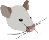
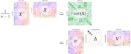
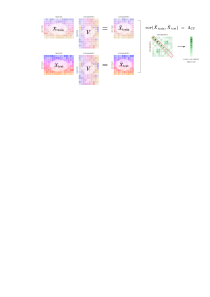
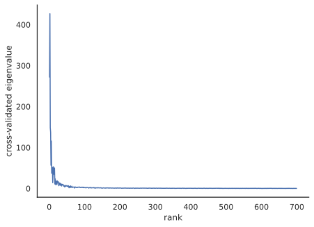
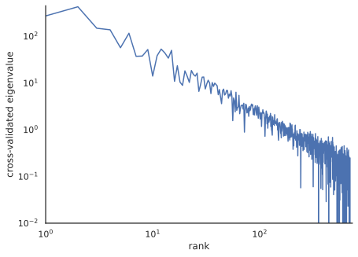
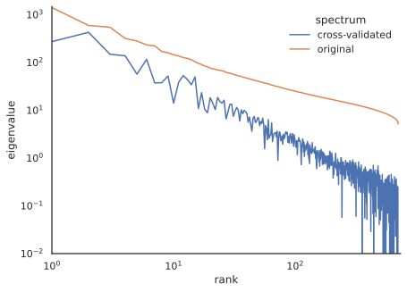
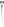

Install all required dependencies
# TODO uncomment before final packaging
# %pip install git+https://github.com/BonnerLab/ccn-tutorial.gitHere’s a link to this notebook on Google Colab.
# TODO uncomment before final packaging
# %pip install git+https://github.com/BonnerLab/ccn-tutorial.gitfrom collections.abc import Sequence
import functools
import warnings
from typing import NamedTuple
import numpy as np
import pandas as pd
import xarray as xr
from sklearn.decomposition import PCA
import seaborn as sns
import matplotlib as mpl
from matplotlib import pyplot as plt
from matplotlib_inline.backend_inline import set_matplotlib_formats
import ipywidgets as widgets
from IPython.display import display
from utilities.brain import load_dataset
from utilities.computation import assign_logarithmic_bins%matplotlib inline
sns.set_theme(
context="notebook",
style="white",
palette="deep",
rc={"legend.edgecolor": "None"},
)
set_matplotlib_formats("svg")
pd.set_option("display.max_rows", 5)
pd.set_option("display.max_columns", 10)
pd.set_option("display.precision", 3)
pd.set_option("display.show_dimensions", False)
xr.set_options(display_max_rows=3, display_expand_data=False)
warnings.filterwarnings("ignore")random_state = 0
rng = np.random.default_rng(seed=random_state)Experimental data is noisy – often fundamentally. When we measure neural activity in response to a stimulus, our recordings comprise several sources of variation:
Of these sources of variation, when investigating a sensory system, we are typically interested in the last one – how the neural response varies with the stimulus.
In the last section, we observed that neural responses have high-dimensional structure, as evidenced by the covariance spectrum obtained from principal component analysis. How much of this variance is driven by stimulus-dependent signal – and how much is noise? The typical assumption when applying principal component analysis as a dimensionality reduction tool is that high-variance dimensions correspond to signal in the system, while low-variance dimensions represent noise. However, there is no fundamental reason this has to be the case!
For example, consider a very realistic scenario where a participant gets bored performing our experiment inside an fMRI scanner and starts yodeling to entertain themselves. The highest variance components in the measured neural response would likely be motion artifacts and not whatever signal we were interested in measuring. A high-quality data preprocessing pipeline would help mitigate such extreme components of variance – but cannot remove them entirely!
In fact, as we saw when we inspected the first couple of latent dimensions in our toy example, the principal components didn’t correspond directly to the latent variables generating the data; rather, they were a mixture of stimulus-dependent variance and nuisance variance.
This suggests that using principal component analysis as a dimensionality reduction tool by setting an arbitrary variance threshold is likely too stringent a criterion: there is possible low-variance signal along the many neglected dimensions in the tail!
Clearly, we need a different approach to using the spectrum to separate signal and noise…
Even random matrices have some covariance structure that result in non-zero eigenvalues. This structure has been mathematically characterized by the Marchenko-Pastur distribution. This makes it especially difficult to infer anything about the reliability or significance of the dimension from the magnitude of the eigenvalue – especially when the eigenvalues are close to zero.
def simulate_marchenko_pastur(
n_stimuli: int = 500,
n_neurons: int = 500,
n_repetitions: int = 50,
) -> np.ndarray:
data = rng.standard_normal((n_repetitions, n_stimuli, n_neurons))
data -= data.mean(axis=-2, keepdims=True)
singular_values = np.linalg.svd(data, compute_uv=False)
return (
xr.DataArray(
name="eigenvalue",
data=singular_values**2 / (n_stimuli - 1),
dims=("repetition", "rank"),
coords={"rank": ("rank", 1 + np.arange(singular_values.shape[-1]))},
)
.to_dataframe()
.reset_index()
)
def view_marchenko_pastur(eigenvalues: xr.DataArray, *, log: bool = False) -> None:
fig, ax = plt.subplots()
sns.lineplot(
ax=ax,
data=eigenvalues,
x="rank",
y="eigenvalue",
estimator="mean",
errorbar="sd",
err_style="band",
)
if log:
ax.set_xscale("log")
ax.set_yscale("log")
ax.set_ylim(bottom=1e-2)
sns.despine(ax=ax, offset=20)
fig.show()
eigenvalues = simulate_marchenko_pastur()
view_marchenko_pastur(eigenvalues)
In a whole-brain calcium-imaging study where mice viewed 2,800 natural images while neural responses were recorded, Stringer et al. (2021) developed cross-validated PCA (CV-PCA) as a method to reliably estimate the covariance structure of the neural responses.

Since each image was viewed twice, these repetitions could be used as train/test splits to estimate covariance eigenvalues. Specifically, eigenvectors are computed on a training set of data, and cross-validated eigenvalues are computed by computing the covariance between two independent sets of data:
\begin{align*} \text{cov}(X_\text{train}, X_\text{train}) &= X_\text{train}^\top X_\text{train} / (n - 1)\\ &= V \Lambda V^\top \end{align*}

\begin{align*} \Lambda_\text{cross-validated} &= \text{cov}(X_\text{train}V, X_\text{test}V)\\ &= \left( X_\text{train} V \right) ^\top \left( X_\text{test} V \right) / (n - 1) \end{align*}

These cross-validated eigenvalues represent the covariance reliably shared across two presentations of the visual stimulus – which is a quantity we are interested in as neuroscientists: what is the “stable” part of the visual representation of a natural image? Notably, these “eigenvalues” need not be positive: if there is no shared covariance between the two systems at a rank, the expected value of the eigenvalue is 0.
TODO add figure showing two sets of data, showing reliable covariance in one dimension but not the other
class CrossValidatedPCA:
def __init__(self) -> None:
return
def __call__(self, /, x: np.ndarray, y: np.ndarray) -> np.ndarray:
self.pca = PCA()
self.pca.fit(x)
x_transformed = self.pca.transform(x)
y_transformed = self.pca.transform(y)
cross_covariance = np.cov(
x_transformed,
y_transformed,
rowvar=False,
)
self.cross_validated_spectrum = np.diag(
cross_covariance[: self.pca.n_components_, self.pca.n_components_ :]
)Let’s apply CV-PCA to our fMRI data to see what it looks like!
data = load_dataset(subject=0, roi="general").load()
display(data)<xarray.DataArray 'fMRI betas' (presentation: 1400, neuroid: 15724)>
-0.2375 -0.4001 -0.7933 0.04382 -0.1157 ... 0.2669 -1.051 -0.179 0.03348 -0.2664
Coordinates: (3/8)
x (neuroid) uint8 12 12 12 12 12 12 12 ... 71 72 72 72 72 72 72
y (neuroid) uint8 21 22 22 22 22 22 23 ... 34 29 29 30 30 30 31
... ...
rep_id (presentation) uint8 0 0 0 0 0 0 1 0 0 0 ... 0 0 1 1 1 1 1 1 1
Dimensions without coordinates: presentation, neuroid
Attributes: (3/7)
resolution: 1pt8mm
preprocessing: fithrf_GLMdenoise_RR
... ...
citation: Allen, E.J., St-Yves, G., Wu, Y. et al. A massive 7T fMRI...Note that the data contain fMRI responses to two repetitions of each image.
data_repetition_1 = data.isel({"presentation": data["rep_id"] == 0}).sortby(
"stimulus_id"
)
data_repetition_2 = data.isel({"presentation": data["rep_id"] == 1}).sortby(
"stimulus_id"
)
cv_pca = CrossValidatedPCA()
cv_pca(data_repetition_1.values, data_repetition_2.values)def plot_cross_validated_spectrum(
cv_pca: CrossValidatedPCA,
*,
log: bool = False,
original: bool = False,
square: bool = False,
bin_logarithmically: bool = False,
) -> mpl.figure.Figure:
fig, ax = plt.subplots()
data = pd.DataFrame(
{
"rank": 1 + np.arange(len(cv_pca.cross_validated_spectrum) - 1),
"cross-validated": cv_pca.cross_validated_spectrum[:-1],
"original": cv_pca.pca.explained_variance_[:-1],
}
).melt(
id_vars=["rank"],
value_vars=["cross-validated", "original"],
value_name="eigenvalue",
var_name="spectrum",
)
if original:
sns.lineplot(
ax=ax,
data=data,
x="rank",
y="eigenvalue",
hue="spectrum",
)
else:
data = (
data.loc[data["spectrum"] == "cross-validated"]
.rename(columns={"eigenvalue": "cross-validated eigenvalue"})
.drop(columns="spectrum")
)
if bin_logarithmically:
data["rank"] = assign_logarithmic_bins(
data["rank"], points_per_bin=5, min_=1, max_=10_000
)
sns.lineplot(
ax=ax,
data=data,
x="rank",
y="cross-validated eigenvalue",
marker="o",
dashes=False,
ls="None",
err_style="bars",
estimator="mean",
errorbar="sd",
)
else:
sns.lineplot(
ax=ax,
data=data,
x="rank",
y="cross-validated eigenvalue",
)
if log:
ax.axhline(0, ls="--", c="gray")
ax.set_xlim(left=1)
ax.set_ylim(bottom=1e-2)
ax.set_xscale("log")
ax.set_yscale("log")
if square:
ax.axis("square")
sns.despine(ax=ax)
plt.close(fig)
return fig
plot_cross_validated_spectrum(cv_pca)
plot_cross_validated_spectrum(cv_pca, log=True)
plot_cross_validated_spectrum(cv_pca, log=True, original=True)
with sns.axes_style("whitegrid"):
fig = plot_cross_validated_spectrum(
cv_pca, log=True, bin_logarithmically=True, square=True
)
ax = fig.get_axes()[0]
ax.grid(True, which="minor", c="whitesmoke")
ax.grid(True, which="major", c="lightgray")
for loc in ("left", "bottom"):
ax.spines[loc].set_visible(False)
display(fig)
Interestingly, the power-law exponent of the neural data appears very close to -1.
In fact, a power-law exponent of -1 appears with surprising regularity in neuroscience.

Open question: same power law everywhere? Sensory systems vs cognitive systems? Different representational formats, LD?
Check your data!
TODO: